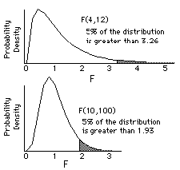

F (Variance Ratio) Distribution
Menu location: Analysis_Distributions_F (Variance Ratio).
Fisher-Snedecor F is the distribution of the ratio of two independent estimates of variance. The variance estimates should be made from two samples from a normal distribution. The size of these two samples is reflected in two degrees of freedom.
F has two degrees of freedom, n (numerator) and d (denominator), because it represents the distribution of two independent chi-square variables each divided by its degrees of freedom:
F can be used to compare two estimates of variance but it is mainly used to compare groups of means and to examine the combined effect of several factors (ways of grouping data) in analysis of variance. For a simple one way analysis of variance (one factor between subjects) there is one grouping of observations into k groups, here n = k-1 and d = N-k where N is the total number of subjects observed. The denominator degrees of freedom, d, is sometimes referred to as the error degrees of freedom. When degrees of freedom are small, larger F values are required to reach significance:

When there is one numerator degree of freedom and d denominator degrees of freedom then F is equal to the square of Student's t with d degrees of freedom. Both F and t are related mathematically by the beta function.
Technical Validation
StatsDirect calculates tail areas and percentage points for given numerator and denominator degrees of freedom. Soper's reduction method is used to integrate the incomplete beta function (Majumder and Bhttacharjee, 1973a, 1973b; Morris, 1992). A hybrid of conventional root finding methods is used to invert the function. Conventional root finding proved more reliable than some other methods such as Newton Raphson iteration on Wilson Hilferty starting estimates (Berry et al., 1990; Cran et al., 1977).
Function Definition
An F variable with ν1 and ν2 degrees of freedom can be transformed to a beta variable with parameters p=ν1/2 and q=ν2/2 as beta=ν1F(ν2+ν1F). The beta distribution with parameters p and q is:
Γ(*) is the gamma function: